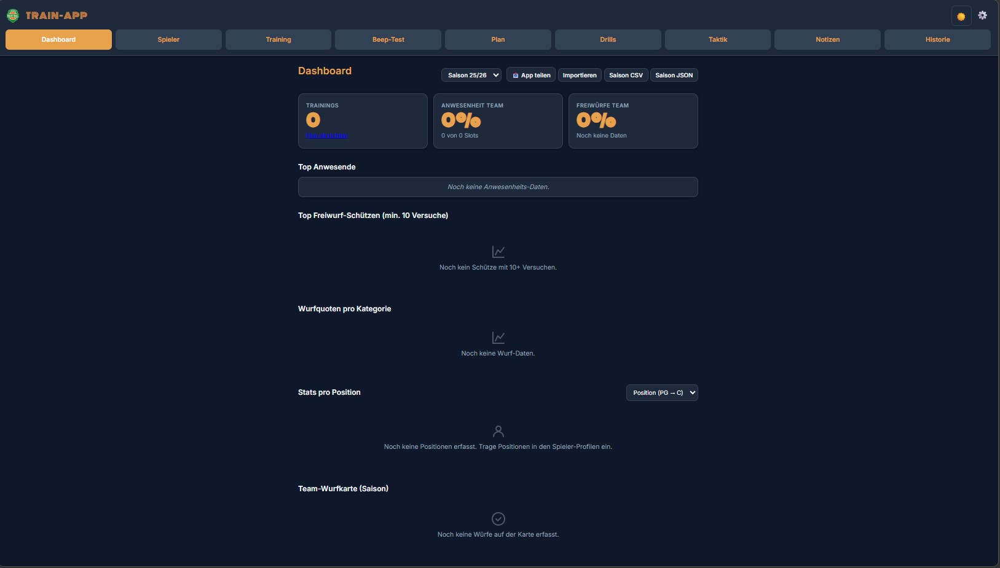
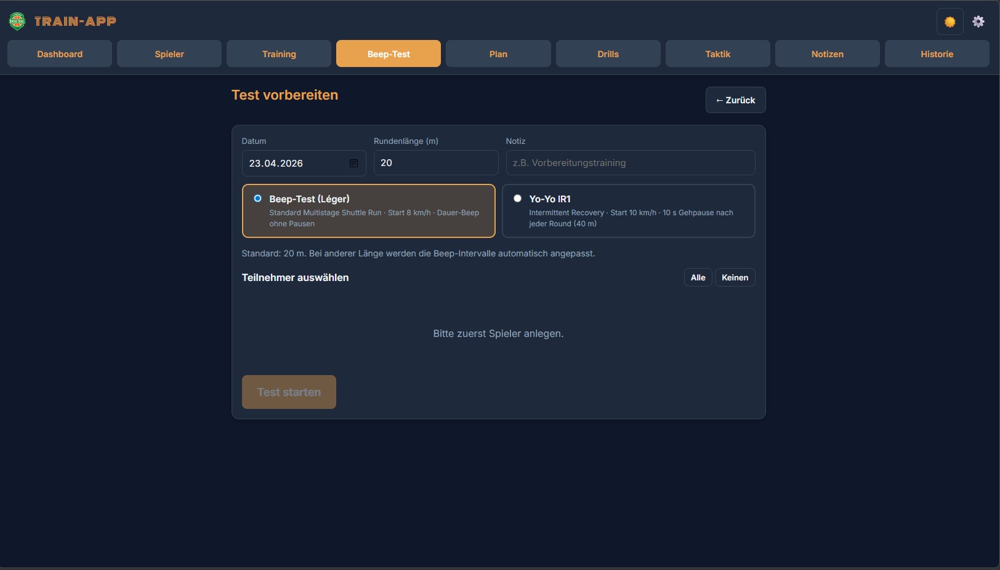
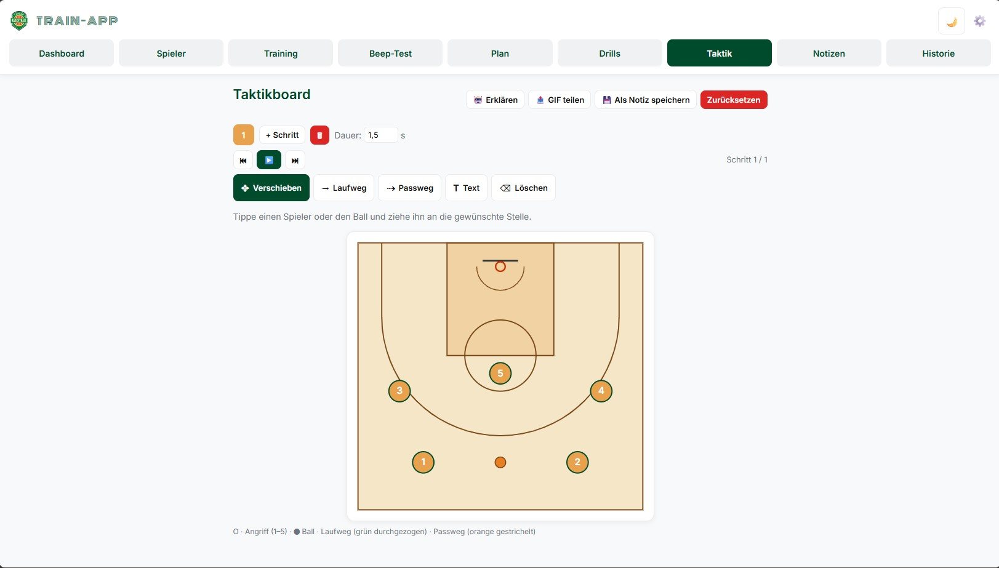

Responsibility
Concept, development, deployment
Timeframe
Season 2025/26
Status
Completed
Project Description
Internal training and team-management tool for the first men's basketball team of TSV Lindau 1850 e.V. Covers beep test, training management, player statistics, and a tactics board in a single installable Progressive Web App — usable directly from the browser, fully offline-capable.
Built deliberately without a frontend framework, split modularly into specialized JS files (history, schedule, training, stats, tactics, notes). Data lives in localStorage with a versioned schema and migrations; AI-assisted training summaries run via the Gemini API with a deterministic fallback.
Technical Approach
- ° Vanilla JavaScript, CSS, and HTML — deliberately without a frontend framework
- ° Progressive Web App via manifest.webmanifest and Service Worker (cache-based offline use, currently beeptest-v67)
- ° Modular JS layout split into specialized files (history.js, schedule.js, training.js, stats.js, tactics.js, notes.js)
- ° Gemini API for AI-assisted training summaries, with a deterministic fallback when the API is unavailable
- ° jsPDF for PDF exports
- ° localStorage as the data store, with a versioned schema and migrations
Features
- ° Beep-test timer with level and shuttle tracking for team runs
- ° Training management with drill picker, team shot percentages per category, and traffic-light trend comparison against the previous session
- ° Team heatmap visualizing training performance
- ° Player statistics with free-throw sparkline, attendance streaks, and position-based aggregates
- ° Tactics board with bidirectional note linking
- ° AI training summary via Gemini with a deterministic fallback
- ° Backup import/export with schema versioning
- ° Form-of-the-week dashboard
Focus Areas
Security: Strict Content Security Policy, XSS protection via consistent HTML escaping, API-key sanitization on export.
Privacy / GDPR: Self-hosted Google Fonts without third-party DNS — no external tracking endpoints.
Performance:
defer on all script tags; logo asset reduced from
791 KB to 138 KB (−83 %).
Mobile & offline: 44 × 44 touch targets, responsive layout, and full offline use via the Service Worker cache.
Current UI


